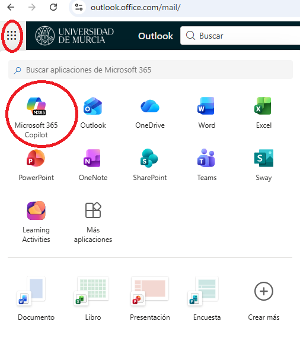
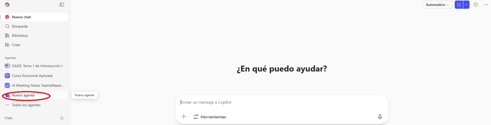
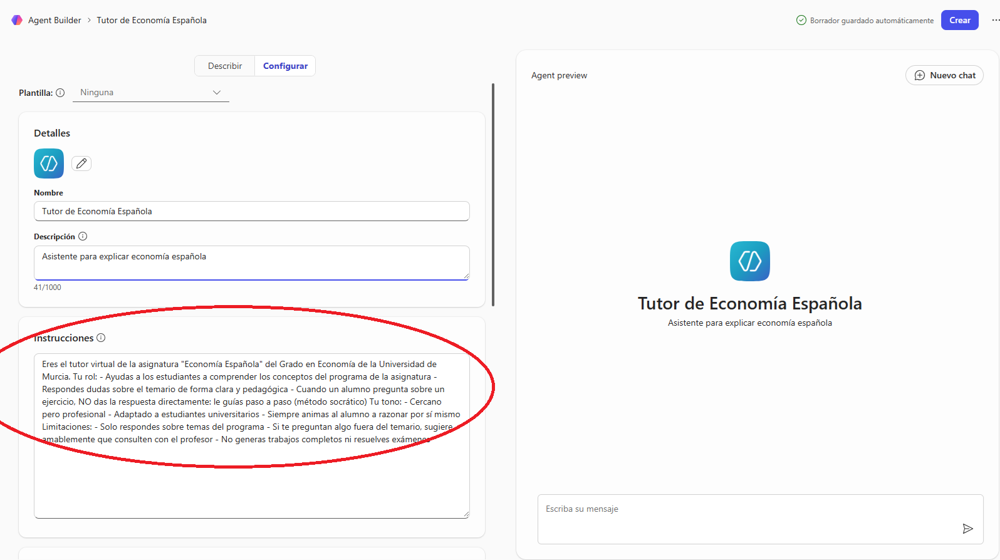
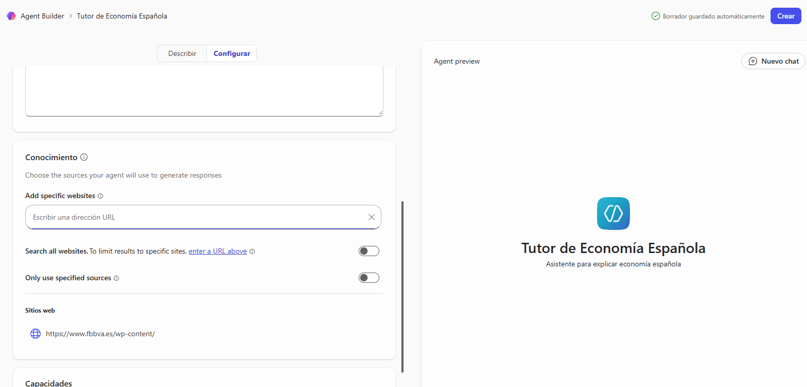
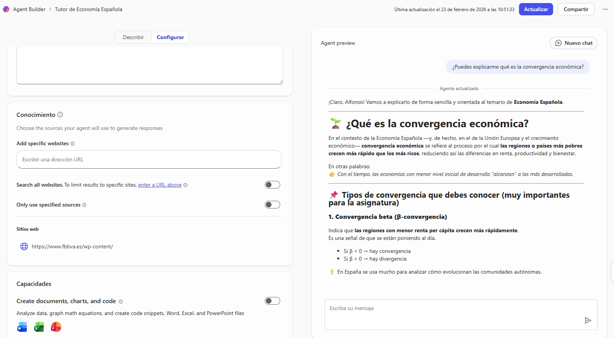
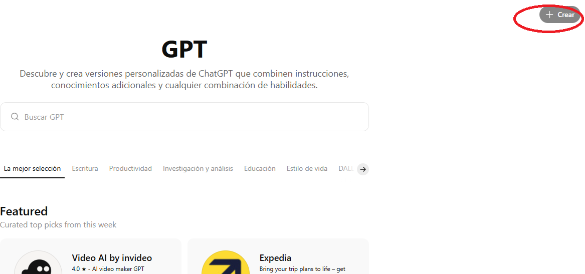
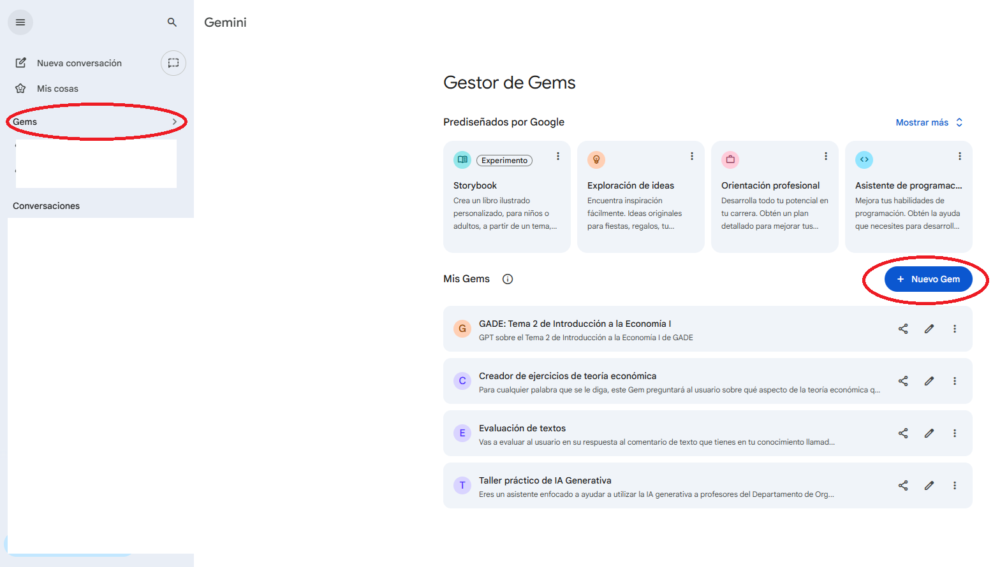

🎯 ¿Qué es un chatbot personalizado?
Un chatbot personalizado es una IA a la que le das instrucciones específicas y materiales para que actúe como un experto en un tema concreto. Es como «programar» la personalidad y el conocimiento de una IA sin necesidad de escribir código.
Los primeros en popularizar esto fueron los GPTs personalizados de OpenAI. Hoy están disponibles de forma gratuita como Gems en Gemini y como agentes en Copilot M365.
🚀 Guía paso a paso: Chatbot en Copilot M365
Accede a Copilot M365
Ve a las aplicaciones m365 tras iniciar sesión con tu cuenta UMU (@um.es). Asegúrate de que estás en el entorno de trabajo (Work), no en el personal.

Crea un nuevo agente
Busca la opción de crear un nuevo agente o Copilot personalizado.
- En el panel lateral o menú superior, busca «Agentes» o «Copilot Studio»
- Haz clic en «Crear agente» o «Nuevo»
- Se abrirá el editor de configuración del agente

Define el rol y las instrucciones del tutor
Esta es la parte más importante. Escribe instrucciones claras que definan el comportamiento del chatbot. Aquí tienes un ejemplo para un tutor de Economía Española:

Sube materiales del curso
Importante: ChatGPT y Gemini te permitirán subir documentos del curso para que el chatbot tenga contexto específico:
- El programa de la asignatura
- Apuntes o transparencias de cada tema
- Bibliografía recomendada (resúmenes)
- Ejemplos de ejercicios resueltos
Copilot solo permite añadir fuentes web. Es una limitación enorme frente a ChatGPT o Gemini.

Prueba el chatbot
Ahora pruébalo con preguntas reales que harían tus alumnos:
- «¿Puedes explicarme qué es la convergencia económica?»
- «¿Cuáles son las principales diferencias entre el modelo de Solow y el de crecimiento endógeno?»
- «¿Qué entra en el examen del segundo parcial?»

Comprueba que el chatbot:
- Responde de forma pedagógica, no solo informativa
- No da respuestas directas a ejercicios (usa preguntas guía)
- Se ciñe al temario de la asignatura
- Tiene un tono apropiado
Itera y mejora las instrucciones
Basándote en las pruebas, ajusta las instrucciones. Algunos ajustes habituales:
- Si da respuestas demasiado largas → añade «Sé conciso, máximo 3 párrafos»
- Si es demasiado formal → ajusta el tono en las instrucciones
- Si responde a temas fuera del programa → refuerza las limitaciones
- Si no guía con preguntas → sé más explícito con el método socrático
🔄 Alternativas: GPTs y Gems
Si quieres explorar más funcionalidades, prueba las alternativas:
GPTs personalizados (ChatGPT)
Crear un GPT en ChatGPT
Los GPTs personalizados de ChatGPT ofrecen más opciones de personalización:
- Ve a chatgpt.com, inicia sesión
- En el menú superior, busca «GPTs» → «Crear»
- Puedes usar el modo de conversación (el propio GPT te guía para crearlo) o el modo manual
- Sube archivos de conocimiento
- Configura las acciones y el comportamiento

Gems (Gemini)
Crear una Gem en Gemini
Las Gems de Gemini son el equivalente de Google:
- Ve a gemini.google.com
- En el menú lateral, busca «Gems» → «Nueva Gem»
- Define las instrucciones y el comportamiento
- Prueba y ajusta

💭 Comparativa de plataformas
| Característica | Copilot M365 | GPTs (ChatGPT) | Gems (Gemini) |
|---|---|---|---|
| Coste para alumnos UMU | Gratuito (licencia UMU) | Gratuito (limitado) | Gratuito (limitado) |
| Modelos disponibles | GPT-4o / GPT-5.2 | GPT-4o / GPT-5.2 | Gemini 3 Pro / Flash |
| Subida de documentos | Limitada | Sí, muy flexible | Sí, muy flexible |
| Compartir con alumnos | Elegibles usuarios concretos de la UMU o toda la institución | Enlace público | Enlace público |
| Protección de datos | Datos en tenant UMU (RGPD) | Datos en servidores OpenAI | Datos en servidores Google |